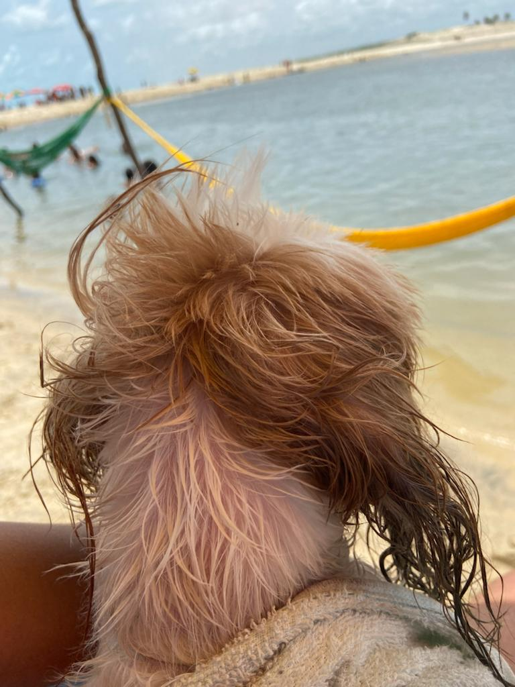

Eu sou Sara Morais, tenho 26 anos, moro em Fortaleza - CE. Sou conhecida por ser simpática e cativante, características que me ajudam a construir amizades em todos os lugares que vou. Meu círculo de amigos é diversificado, e valorizo cada um deles, sempre dispost a estender uma mão amiga ou ouvir atentamente suas histórias.
Atualmente, estou cursando Engenharia Ambiental e Sanitária no IFCE, uma área crucial para nosso planeta. No entanto, há alguns anos, surgiu um novo interesse na minha vida: a informática. Esse mundo digital começou a me intrigar, e gradualmente, minha paixão pela área cresceu. Esse interesse me levou a tomar a decisão de ingressar no curso de Análise e Desenvolvimento de Sistemas. Estudar programação e desenvolvimento de software me proporciona uma compreensão mais profunda do potencial da tecnologia, como ela pode ser aplicada para resolver problemas e melhorar processos. O que torna esse percurso ainda mais emocionante é o sonho que carrego comigo: a possibilidade de unir minhas duas formações, Engenharia Ambiental e Informática. Acredito que há um enorme potencial nessa conexão. Com a tecnologia, posso criar soluções inovadoras para questões ambientais, como sistemas de monitoramento, análise de dados para a gestão de recursos naturais e muito mais.
O caminho à frente pode ser desafiador, mas estou determinado a perseguir meu sonho e fazer a diferença nas áreas que me apaixonam. Acredito que a combinação da Engenharia Ambiental e do Desenvolvimento de Sistemas pode levar a avanços e contribuir para um futuro mais sustentável e tecnologicamente avançado. É uma jornada emocionante e cheia de promessas, e estou ansiosa para vê-la se desdobrar.
Meus hobbies são variados e refletem minha personalidade alegre. Viajar é uma paixão que me leva a explorar novos lugares e culturas. A praia em Fortaleza é meu refúgio preferido, onde posso brincar nas ondas e aproveitar o sol quente. Tenho um companheiro fiel, meu cachorrinho Jimmy, com quem compartilho momentos de pura alegria.Nos momentos de lazer, você me encontrará imersa no mundo dos videogames, desafiando-me em aventuras virtuais.

Sou uma jogadora dedicada, tanto jogos de tabuleiro, cartas, online, um fato sobre mim é que sou muito competitiva! e estou sempre em busca de novos desafios. Além disso, a fotografia é uma de minhas paixões, capturando momentos preciosos em minhas aventuras e na companhia de amigos e família.
Falar em família, passar tempo de qualidade com eles é algo que valoriza imensamente. Não há nada como compartilhar momentos especiais com aqueles que amo.